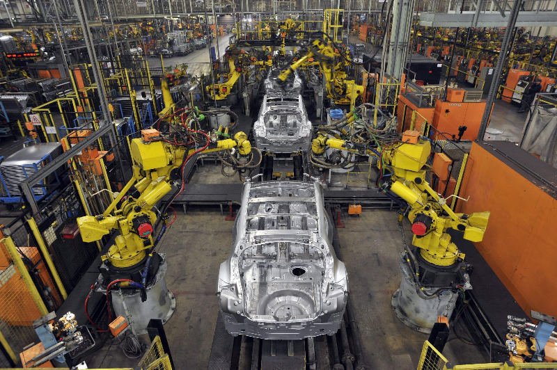

"Computers are like Old Testament gods: lots of rules and no mercy."
- Joseph Campbell
sad.
Computers are the lifeblood of today's world and if they were to shut down there would be disasterous effects. Planes would fall, electrical systems would fail, food would not be delivered and society would basically shutdown. Virtually every object we interact with in our day to day lives has in part been shaped by a computer. Whether it was designed on one, made at a factory being controlled by one, or sent along shipping routes developed by one; computers have become an indispensible part of the world.
And for good reason! Much like the Industrial Revolution, this era of digitization and computers has completely revolutionized life. During the Industrial Revolution we saw the simplification of many menial tasks through mechanization. This in turn would only open the door for new possibilities such as improved agricultural farming methods, faster and more transportation means, and better communication systems; which generally lead to the improvement of life for many. Now with the advent of computers this is happening again. From automated farming equipment or medical machines to global telecommunication systems and education opportunities computers have changed our lives. Generations from now it is likely that this era will be known as something akin to the digital revolution or information revolution.
Humans have had the need for computation since the ancient era, which would be needed to figure out problems related to harvests and trade. As time progressed specialized mechanical computation machines would be developed, making it easier for the perosn doing the computation or removing the hassle of doing task altogether. As society continued to scale however, better methods for computaton were required. This would become especially true at the turn of the 20th century. 17,000,000 people were mobilized for World War 1 and over 100,000,00 were involved in World War 2, not to metion our demand for scientific computation had risen significantly as advances became more sophisticated. Analog computation methods simply could not meet this demand. However with the advent of new engineering methods the vacuum tube and then the transistor would be invented opening the door for the digital era